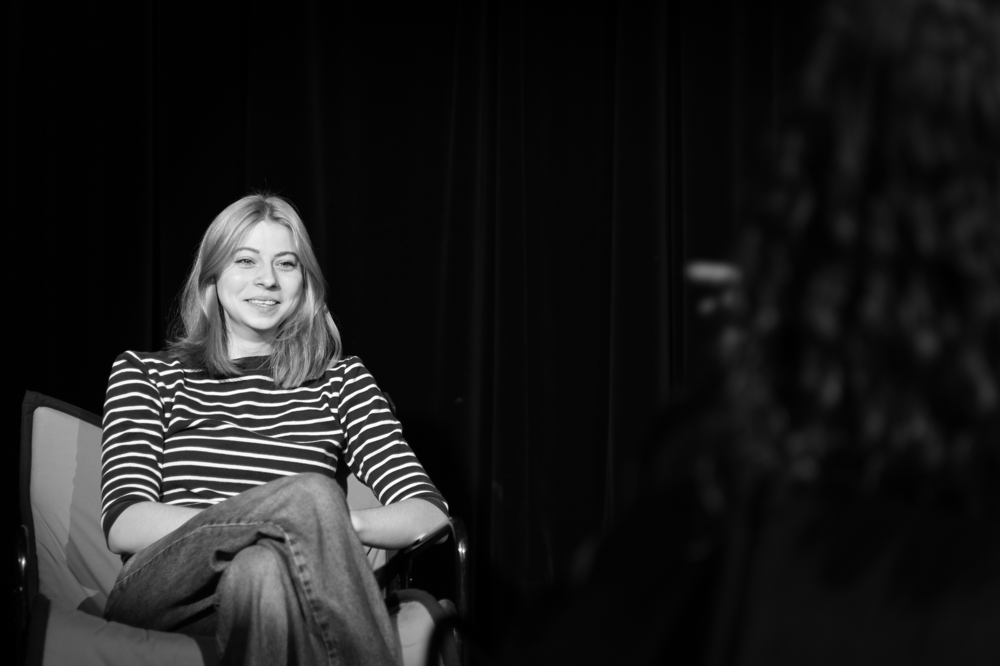
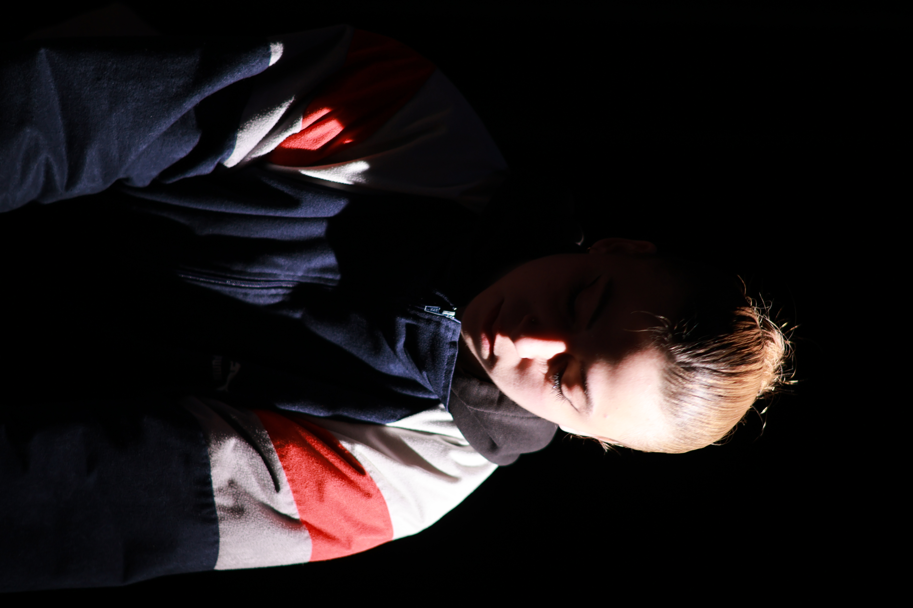
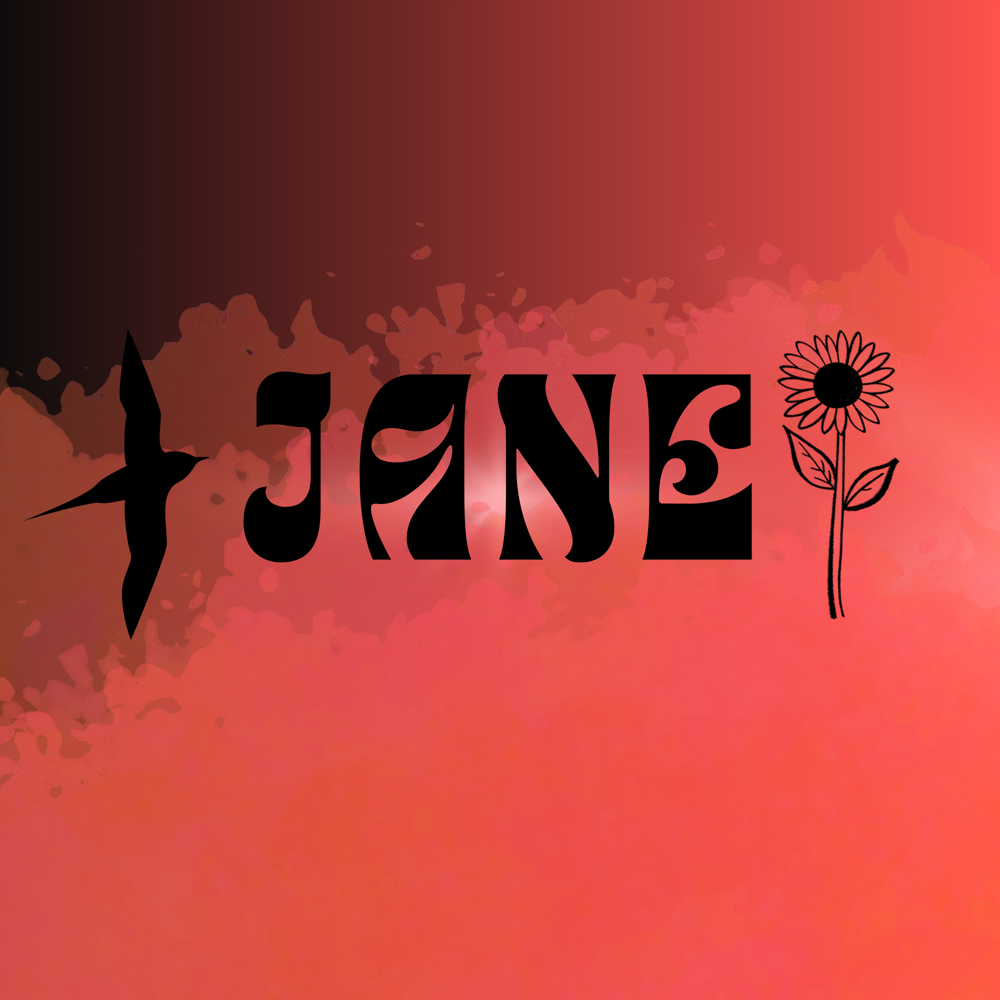

Étudiante en information-communication parcours numérique, aspirant journaliste



L’objectif du TP Publicité était de reproduire une photo publicitaire de parfum. J’ai choisi le parfum Givenchy. Pour cela, j’ai détouré le flacon de parfum avec Photoshop puis augmenté sa luminosité pour qu’il devienne le point central de la photo. J’ai aussi ajusté les contrastes et les couleurs pour que le flacon et le visage du modèle rendent une image harmonieuse. Et enfin, j’ai reproduit les éléments graphiques de la publicité originale, notamment le logo et la typographie. J’ai beaucoup aimé travaillé sur cet exercice, ça m'a permis de comprendre davantage les outils de photoshop.
Cette année m’a réellement alignée avec mon envie professionnelle, le journalisme m’a toujours attirée, et tout au long de cette année j’ai pris conscience des enjeux liés à l’information numérique, de sa rapidité comme de ses dérives possibles. Et c’est pour cela que je veux devenir journaliste : pour créer des récits qui éclairent, pas qui manipulent. Pour remettre de la vérité dans un flux saturé de faux. En mêlant expression artistique et pratique journalistique, je souhaite proposer une manière différente de raconter l’information, plus visuelle et sensible.
📩 jeanneouvrardfoix@gmail.com